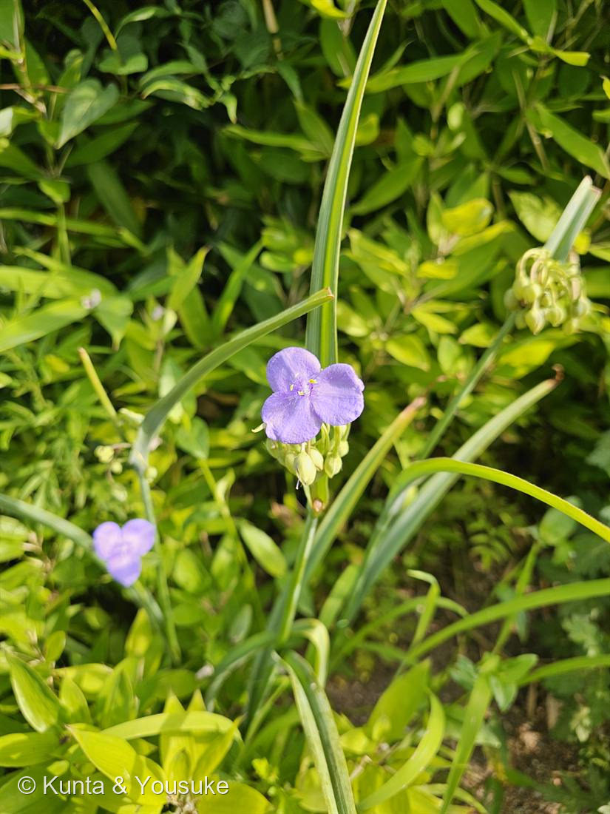

地図を読み込んでいるよ…
🔍 写真も地図も、押しているあいだ拡大して見られるよ（スマホは指を置いてすこし待ってね）。
🌍 の地図＝この子がもともと自生している場所を緑に。北アメリカ（日本には明治期に渡来・各地で逸出／帰化）。
日本の道ばたで会ったけれど、日本は塗っていない——明治のころに来て、逸げ出して野生化した子だから。
⚠ 地図は国（日本と中国だけ県・省）までしか塗れないから、ほんとうの分布より広く見えていることがあるよ。地図はだいたいの場所。正確なところは、上の文を見てね。
ムラサキツユクサ（紫露草）
Tradescantia ohiensis Raf.
英名 · spiderwort（スパイダーウォート）／北アメリカ原産・日本では逸出して野生化
ツユクサ科 · Commelinaceae（ムラサキツユクサ属）
燻太さんの気づきこの個体は、すこしだけ色が薄い……その「色の濃淡」こそが、この植物の一番の見どころ
名前と学名の由来
- Tradescantia（トラデスカンティア）＝17世紀イギリスの王室庭師・植物採集家ジョン・トラデスカント親子（John Tradescant, 父と子）にちなむ。息子が北アメリカから持ち帰った植物に、リンネが親子の名を贈った。→ No.003 スイレンボク（Grewia）・No.027 ニオイバンマツリ（Brunfelsia）に続く、人名をもらった属名の仲間。
- ohiensis（オハイエンシス）＝ラテン語で「オハイオの」。北アメリカ原産であることを示す。
- 英名 spiderwort（クモの草）＝茎を切ると出る粘液が糸を引いてクモの糸のように見えることから。
この植物のこと ── 生きた線量計
- 花の中心の紫のもじゃもじゃ＝雄しべの毛（stamen hair）。これは細胞が一列に数珠つなぎになったもの。透明で細胞ひとつひとつが見えるので、原形質流動の観察材料として教科書の定番になっている。
- Tradescantia 雄しべ毛突然変異試験（Trad-SH assay）——青紫／ピンクの対立遺伝子をもつヘテロ個体（有名なのはクローン #4430）では、細胞に突然変異が起きると、そこから先の細胞が青紫からピンクに変わる。つまりピンクの細胞を数えるだけで、放射線や化学物質の変異原性が測れる。花粉母細胞の微小核試験（Trad-MCN）とあわせ、環境モニタリングに実際に使われてきた。生きた植物が、線量計になる。
- 染色体が大きくて数が少ないことも、細胞遺伝学の材料として愛されてきた理由。
- 花の色素はアントシアニン（デルフィニジン系）。→ No.007 シロツメクサの赤い模様、No.015 ホーリーバジルの葉裏、No.023 ブルーベリーの実と、同じ色素で図鑑がつながる。
- おまけの豆知識：同じツユクサ科でもツユクサ属のあの青は特別で、アントシアニン6分子＋フラボン6分子＋マグネシウムが組み上がった超分子錯体コンメリニン（commelinin）。「青くする」やり方は、科のなかでも一様じゃない。
ツユクサとの見分け ── 近所さんだけど、別のおうち
- この子は、図鑑の「探してみたい」リストに載っているツユクサ（Commelina communis）の近縁。同じツユクサ科だけれど、属がちがう。
- ツユクサ＝花びら3枚のうち上2枚だけが大きな青、下1枚は小さく白。左右対称で、舟のように折れた苞に包まれる。
- ムラサキツユクサ＝花びら3枚が同じ大きさ・同じ色。きれいな三角（放射相称）。写真のとおり。
- 種の見きわめ：がくに毛がなく、白い粉を帯びる→ T. ohiensis が有力。よく似たオオムラサキツユクサ（T. virginiana）はがく全体に毛が密生する。ただし日本では園芸交雑種（T. × andersoniana）の逸出も多く、そこは正直に確定を少しだけ保留しておく。
- 一日花。朝ひらいて、昼すぎにはしぼんで、とけるように崩れる。この写真は朝7時58分＝ちょうど開いている時間に会えた。
燻太さんの観察メモ ── 「この個体は、少しだけ色が薄い」
- いちばんありそうなのは個体差・品種差。ムラサキツユクサ属の花色は白〜ピンク〜濃紫まで幅があり、逸出した園芸系ならなおさら振れる。アントシアニンの量のほか、液胞のpH・共色素・日照や気温でも濃淡は動く。
- ⚠ 薄い＝突然変異、ではない。Trad-SH assay は特定のヘテロ系統で、毛の細胞ひとつ単位のピンクの斑点を数えるもので、花全体の淡さとは別の話。ここは混ぜないでおく。
- それでも——「花の色が薄い／変わる」ことに立ち止まった、その着眼点そのものが、この植物が世界中の実験室で使われてきた理由と同じところを向いている。この子にとって色の濃淡は、ただの見た目ではなく、読みとれる情報なのだから。
参考：Kate Greenaway Language of Flowers(1884)・Project Gutenberg／花言葉-由来
花言葉
- 日本で
- 尊敬しているが恋愛ではない。
- 英語圏
- Spiderwort — Esteem not love.（尊敬しているが恋愛ではない）
Virginian Spiderwort — Momentary happiness.（つかのまの幸せ）Greenaway 1884。この2つは別の項目＝別のきょうだいに、別の言葉があてられている
なぜ、そうなったか：日本の「尊敬しているが恋愛ではない」は、esteem not love のまる写し。訳ですらなくて、そのまま。
でも、ぼくがおどろいたのは2つめのほう。Greenaway は Virginian Spiderwort を別の項目として立てている——これは Tradescantia virginiana＝オオムラサキツユクサ、上に書いた「がくの毛」で見分ける、あの相手のこと。そのきょうだいの言葉が Momentary happiness（つかのまの幸せ）。
この写真は朝7時58分。一日花で、昼すぎにはとけるように崩れてしまう。つかのまの幸せ——140年前の人がきょうだいにつけた言葉が、この一枚のことを言い当てている。
参考：Kate Greenaway Language of Flowers(1884)・Project Gutenberg／花言葉-由来